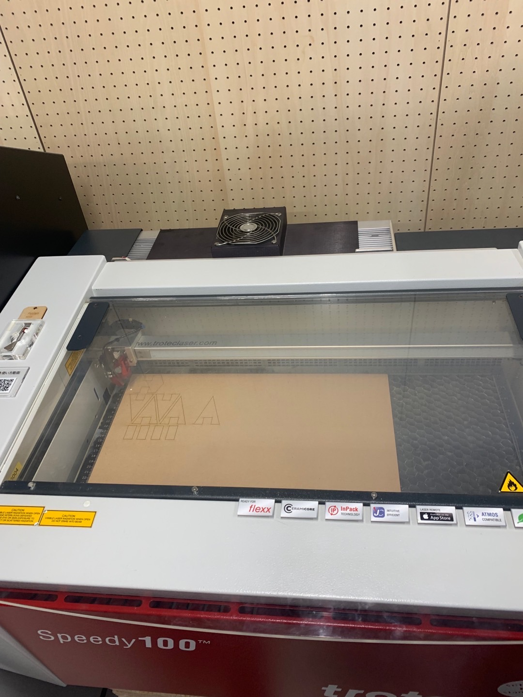

Computer-controlled Cutting
ダイヤモンド
アイデア発想
まず、何が綺麗かと思って、キラキラなものに関して考えた後、ダイヤモンドにした。
そして、ipadでスケッチをしながら、光と影との組み合わせを考えていた。
作成させ
作り流れ
fusion360で設計+イラスト
レーザー機で切って、組み合わせる

この前、作った無用なものを破れて利用して、その基盤をダイヤモンドにつけた。
上から照らすと
暗闇中も輝けるダイヤモンド